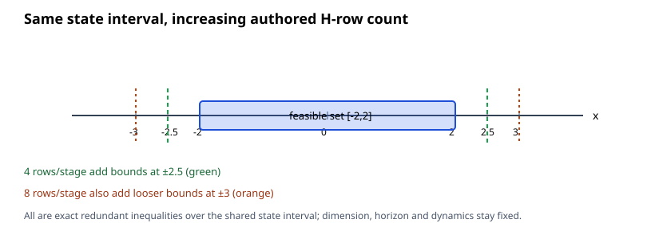

At fixed state/control dimension n=1, horizon T=2, initial state, dynamics, controls and objective, this run increases authored state H rows from 2 to 4 to 8 per stage. Every variant defines the same interval [-2,2]; added inequalities are exact redundant bounds. Each fixture has three constrained stages.
Evidence scope: the independent exact-rational fixture oracle checks the fixed scenario data, required initial/dynamics/control/state rows, attained zero objective, and feasibility of the zero history in every emitted relation. This proves the unique zero optimum for these three fixtures only; it is not a general completeness or arbitrary polyhedral-equivalence certificate.
| Authored state rows | Reach-back median run range; CPU; peak RSS | Strategy B median run range; CPU; peak RSS | Verified attempts | Verified pairs |
|---|---|---|---|---|
| 2 per stage (6 total) | 5.250 ms 5.119–11.096 ms CPU 0.009440 s; RSS 13556 KiB | 0.741 ms 0.675–0.771 ms CPU 0.005198 s; RSS 13556 KiB | 12/12 | 6/6 |
| 4 per stage (12 total) | 5.725 ms 5.178–13.147 ms CPU 0.011576 s; RSS 13556 KiB | 0.693 ms 0.681–0.738 ms CPU 0.004914 s; RSS 13556 KiB | 12/12 | 6/6 |
| 8 per stage (24 total) | 5.674 ms 5.338–12.895 ms CPU 0.009966 s; RSS 13556 KiB | 0.738 ms 0.712–0.876 ms CPU 0.004888 s; RSS 13556 KiB | 12/12 | 6/6 |
One excluded warmup and six alternating measured pairs were attempted per case. The solver timing covers SynthesisWorkspace::run() only. The wrapper also records exact child user+system CPU and peak RSS from POSIX wait4; these receipts cover the complete isolated process and are not additive with solver time. One backend thread was requested and each process had 300 s CPU, 8 GiB address-space and 300 s wall limits. These are descriptive values; they establish no winner, speedup, memory scaling law or source-level limiter. Linux perf was unavailable.

| Strategy | Rows/stage | Authored total | Joint coordinates | Output inequality rows | Output equality rows | Nonzero H coefficients |
|---|---|---|---|---|---|---|
| Reach-back | 2 | 6 | 5 | 14 | 4 | 22 |
| Strategy B | 2 | 6 | 5 | 10 | 4 | 18 |
| Reach-back | 4 | 12 | 5 | 22 | 4 | 30 |
| Strategy B | 4 | 12 | 5 | 16 | 4 | 24 |
| Reach-back | 8 | 24 | 5 | 38 | 4 | 46 |
| Strategy B | 8 | 24 | 5 | 28 | 4 | 36 |
Output row and coefficient counts describe the emitted H-relation, not allocated bytes, solver iterations, sparse factorization work, or phase durations. The visual here is one-dimensional; the independent two-dimensional illustration remains in the dimension ladder report.
Data capture revision cc4fc2f4af16a1ef854eb9304cb73757e028dd5d, binary SHA-256 1402593776b7c0c60655430fb25f5ee12852c06f0a00d229ea43eabc4db18e9b. Build provenance; configure log; full Release build log; manifest; raw attempts; exact-check results; summary; excluded preflight and profiler diagnostics; file hashes. Inputs: 2 rows/stage, 4 rows/stage, 8 rows/stage.
Measurement-source hashes: {"CMakeLists.txt": "ca8983cc20e8b7e493c233940b51b14ec0162b4e9c7bd0df57ddb7b3291fe3d9", "check_constraint_ladder.py": "e76e5cee6a10ede97cf91bb4c4b66e86b162119187ec95d2b373af33971d3e26", "dimension_ladder.cpp": "ad94feb5dd56e722420a777b677c77f3fc42989a4a1e4309ff40eabdd5bc3039", "render_constraint_ladder.py": "84f13ae97690a4f717e3e7f774f5f1d974fcd1177f4087104452d19c7474fc8e", "run_constraint_ladder.py": "6f57ab2f1335a3670b07cd204b91873fe81ece0e2ac10463f499e9ca0b267934", "summarize_constraint_ladder.py": "3974da50943233216b77229a9196cb90acccdb4525e1d1bc30e8d7fa221444ff"}